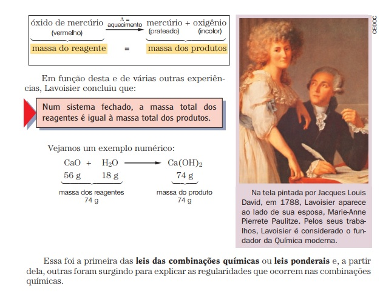

Química
Estudo científico da constituição da matéria, suas propriedades, transformações e as leis que as regem.
A produção de diversos materiais que tilizamos em nosso dia-a-dia, como, por exemplo, a borracha, o náilon e o metal, é resultado de conhecimentos de Química e de sua aplicação industrial.
Assim, podemos perceber que a Química estuda a matéria, as substâncias que a constituem e as suas transformações.
Leis ponderais: relacionam as massas dos participantes de uma reação.
Lei da conservação das massas- Essa lei foi proposta, por volta de 1775, por Antoine Laurent Lavoisier e é popularmente enunciada da seguinte maneira: Na natureza, nada se cria, nada se perde, tudo se transforma. Lavoisier formulou essa lei depois de realizar uma experiência com óxido de mercúrio (reagente), o qual, antes de ser submetido a aquecimento, teve sua massa determinada. quando colocado em um sistema fechado; mediante o aquecimento desse reagente, Lavoisier obteve mercúrio e oxigênio (produtos), que, ao final da reação, também tiveram suas massas identificadas.
Lei das proporções constantes
Em função desses resultados, Proust enunciou a seguinte lei ponderal conhecida como lei das proporções constantes: Toda substância apresenta uma proporção em massa constante na sua composição.
Essas leis foram desenvolvidas a partir de experimentos realizados com quantidades de matéria possíveis de serem "pesadas" nas balanças existentes na época, ou seja, eram observações realizadas em nível macroscópico. Ainda não existia nenhuma explicação para os fatos relacionados à composição da matéria em nível microscópico.
Vamos utilizar o caderno aluno volume 2 para realizar as nossas atividades. Clique no botão para ter acesso ao material. A parte da Química encontra-se nas páginas de 36 a 45.
Abaixo estão as aulas que foram trabalhadas os conteúdos da apostila. Assista as aulas e responda no seu caderno as questões do caderno do aluno.
08/06 - 1ª série EM - Química - Transformações químicas
15/06 - 1ª série EM - Química - Conhecimento científico e estados físicos da matéria
22/06 - 1ª série EM - Química - Como identificar os materiais por meio de suas propriedades?
29/06 - 1 ª série EM - Química - Cada um na sua!
06/07 - 1ª série EM - Química - Nada se perde, tudo se transforma
13/07 - 1ª série EM - Química - Um ou um milhão
20/07 - 1ª série EM - Química - Nada em excesso é bom!
BotãoQuímica - 1EM - Recuperação - 1 bimestre
Segue link para realização da recuperação.
Botão